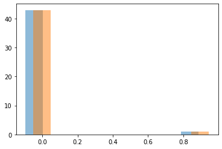

def scaled_laplacian_(W):
'''
Normalized graph Laplacian function.
:param W: np.ndarray, [n_route, n_route], weighted adjacency matrix of G.
:return: np.matrix, [n_route, n_route].
'''
# d -> diagonal degree matrix
W = W.to_numpy()
n, d = np.shape(W)[0], np.sum(W, axis=1)
# L -> graph Laplacian
L = -W
L[np.diag_indices_from(L)] = d
for i in range(n):
for j in range(n):
if (d[i] > 0) and (d[j] > 0):
L[i, j] = L[i, j] / np.sqrt(d[i] * d[j])
# lambda_max \approx 2.0, the largest eigenvalues of L.
lambda_max = eigs(L, k=1, which='LR')[0][0].real
return np.mat(2 * L / lambda_max - np.identity(n))matrix([[ 0.88493057, -0.096756 , -0.06702422, -0.09308737, -0.07113124,
-0.04993536, -0.0500738 , -0.0844711 , -0.07289084, -0.06299807,
-0.03927706, -0.06931399, -0.05943873, -0.04844248, -0.04286681,
-0.03532173, -0.03593824, -0.01937131, -0.03274961, -0.03803474,
-0.02909965, -0.03325862, -0.02841219, -0.02400141, -0.02778651,
-0.02989302, -0.03173424, -0.0509572 , -0.00151091, -0.02961854,
-0.02231168, -0.0255294 , -0.02703356, -0.01730217, -0.03346892,
-0.01635658, -0.02654869, -0.02092417, -0.02208501, -0.02066794,
-0.02647098, -0.0262092 , -0.03962727, -0.0205895 ]])(array([43., 0., 0., 0., 0., 0., 0., 0., 0., 1.]),
array([-0.05357515, 0.04638357, 0.14634228, 0.246301 , 0.34625972,
0.44621843, 0.54617715, 0.64613587, 0.74609459, 0.8460533 ,
0.94601202]),
<BarContainer object of 10 artists>)